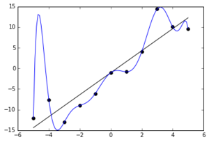
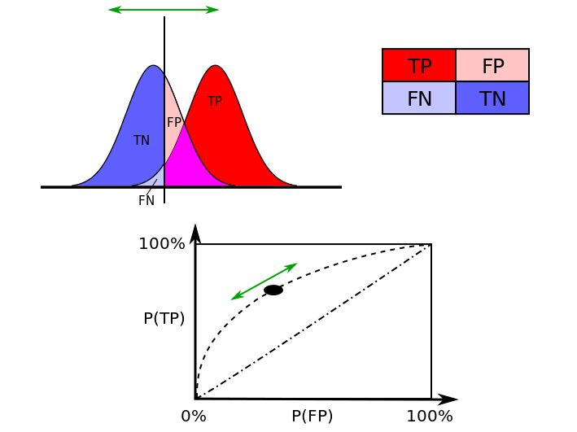

2 Assessing the validity of a model
2.1 Introduction
Broadly speaking, model selection is about choosing a model that best fits (on some sense) the available sample so that it can be used to understand the phenomenon under investigation. This also includes being able to predict future outcomes and to assess research hypotheses within the population.
Therefore, to reach these objectives, the available information should be used for two important tasks:
- building the model (learning phase)
- assess its out-of-sample validity
The two tasks are interdependent since building the model, i.e. finding the most suitable one, is made by optimizing, in some sense, its out-of-sample validity.
Out-of-sample validity is a crucial concept in model selection. Indeed, it allows to assess how the results of a statistical analysis (e.g. the selection of a model) will generalize to other outcomes, equivalently, to the population. Without out-of-sample validation, a selection procedure will necessarily tend to choose models that overfit the data, since they would be the best within the sample. In other words, when overfitting, a model describes random error or noise instead of the underlying relationship, leading to an excessively complex model (too many parameters relative to the number of observations) and consequently a poor predictive performance and a wrong representation of what happens in the population.
Example of overfitting situation
# Taken from https://en.wikipedia.org/wiki/Overfitting.
# Noisy (roughly linear) data is fitted to a linear function and a polynomial function.
# Although the polynomial function is a perfect fit, the linear function can be expected
# to generalize better: if the two functions were used to extrapolate beyond the fit data,
# the linear function would make better predictions. This is because the polynomial
# function it is too dependent on the data which contains sampling error.
#
knitr::include_graphics("Figures/OverfitEx1.png")
More formally, consider a random variable \(Y\) distributed according to model \(F_{\boldsymbol{\theta}}\), possibly conditionally on a set of fixed covariates \(\mathbf{X}=[x_1 \ldots \, x_p]\). We observe a random sample \(\mathbf{y} = (Y_i)_{i = 1, \ldots , n}\) supposedly generated from \(F_{\boldsymbol{\theta}}\) together with a non-random \(n\times p\) full rank matrix of predictors \(\mathbf{X}\). Define the prediction function \(\hat{\mathbf{y}}\) that depends on the considered model, for example \(\hat{\mathbf{y}}=\hat{\boldsymbol{\beta}}\mathbf{x}\) for the linear regression model. The inferential task is to assess the accuracy of the prediction function, so that it can be compared to alternative prediction functions.
Quantifying the prediction error of a prediction function requires specification of a discrepancy \(D\) between a prediction \(\hat{\mathbf{y}}\) and the actual response \(\mathbf{y}\). A natural choice is the mean squared error (mean residual squared error) \[\begin{equation} D\left(\hat{\mathbf{y}},\mathbf{y}\right)=\frac{1}{n}\sum_{i=1}^nd\left(\hat{y}_i,y_i\right)=\frac{1}{n}\sum_{i=1}^n\left(\hat{y}_i-y_i\right)^2 \end{equation}\] However, in order to avoid overfitting situations for out-of-sample validity, what is actually sought is the true prediction error, i.e. the (mathematically) expected discrepancy between prediction function out-of-sample \(\hat{y}_0\) and the corresponding out-of-sample realization \(y_0\), namely \[\begin{equation} \text{Err}=\mathbb{E}_{0}\left[d\left(\hat{Y}_0,Y_0\right)\right] \end{equation}\]where \(\mathbb{E}_{0}\) denotes the expectation at the out-of-sample distribution. This quantity needs to be estimated in some manner with the sample at hand, hence the real challenge in model selection is
- the specification of an out-of-sample validity measure, called a model selection criterion
- estimators for model selection criteria
- performance measures to compare different model selection criteria
In the following sections we present several methods for model selection and measures for out-of-sample validity.
Exercice (optional):
- Consider the Malnutrition in Zambia dataset (without interections). As model fit assesment consider a) the residual variance and b) the R^2. Starting from the full model (without interactions), increase progressively model size by including polynomials (on the continuous variables) and observe the behavior of the model fit criteria (using e.g. a plot).
Additional material:
Controlling for out-of-sample validity follows the lines of the scientific approach, in particular Occam’s razor problem-solving principle (https://en.wikipedia.org/wiki/Occam's_razor).
One can intuitively understand overfitting from the fact that information from all past experience can be divided into two groups: information that is relevant for the future (“signal”) and irrelevant information (“noise”).
Everything else being equal, the more difficult a criterion is to predict (i.e., the higher its uncertainty), the more noise existing in past information needs to be ignored. The problem is to determine which part to ignore. See https://en.wikipedia.org/wiki/Overfitting.
2.2 Cross-Validation
The challenge is now to find a suitable estimator for \(\text{Err}\) with the help of the sample and the (assumed) model \(F_{\boldsymbol{\theta}}\). A first guess is the apparent error \[\begin{equation} \text{err}= \frac{1}{n}\sum_{i=1}^nd\left(\hat{y}_i,y_i\right) \end{equation}\]Unfortunately err usually underestimates Err since \(\hat{y}_i\) has been adjusted to fit the observed responses \(y_i\) (trainig set).
Ideally, one should have an independent validation set (or test set) of say \(n^{\star}\) additional observations \(y_{0i}, i=1,\ldots,n^{\star}\), so that one could estimate Err using \[\begin{equation} \widehat{\text{Err}}_{\text{val}}= \frac{1}{n^{\star}}\sum_{i=1}^{n^{\star}}d\left(\hat{y}_{0i},y_{0i}\right) \end{equation}\] Cross-validation attempts to mimic \(\widehat{\text{Err}}_{\text{val}}\) without the need for a validation set. Define \(\hat{y}_{(i)}\) to be the predicted value computed on the reduced training set in which the \(i\)th observation has been omitted. The the leave one out cross-validation estimate of prediction error is \[\begin{equation} \widehat{\text{Err}}_{\text{cv1}}= \frac{1}{n}\sum_{i=1}^{n}d\left(\hat{y}_{(i)},y_{i}\right) \end{equation}\]A more common practice is to leave out several observations at a time: the sample is randomly partitioned into \(J\) groups of size about \(\lfloor n/J\rfloor=n_J\) each, then for each \(j=1,\ldots,J\) groups, the training set is the sample without the \(j\)th group on which the prediction \(\hat{y}_{(j)}\) is computed and then compared to the observations in the \(j\)th group \(y_j\) using the chosen discrepancy measure \(D\). A common choice is \(J=10\) leading to the ten-fold cross-validation procedure. Reducing from \(n\) to \(J\) the number of training and validation sets reduces the necessary number of prediction rules constructions (estimation). The optimal value for \(J\) is however not known.
Exercise: (solutions (5.2.1) provided by Alexander Maslev, Hanxiong Wang and Minyoung Lee).
Program k-fold Cross-Validation (with k=2) and do model selection in a specific simulation setting with an exhaustive search. Follow these steps:
- Generate from a MVN (multivariate normal) a matrix \(\mathbf{X_{n*p}}\) with \(n = 1000\) and \(p = 5\). You can choose the location vector as you wish but set the scale matrix as the identity.
- Choose the generating vector \(\boldsymbol{\beta }= [3 \; 1.5 \; 0 \; 2 \; 0]\) and retrieve the signal to noise ratio of this setting.
- Generate \(\hat{\mathbf{y}}\) thanks to the relation \(\mathbf{y} = \mathbf{X_{n*p}} \; \boldsymbol{\beta} + \boldsymbol{\epsilon}\) where \(\epsilon_{i}\) is a standard normal, \(n = 1000\) and \(p = 5\). Suppose for simplicity that the errors are uncorrelated.
- Split the data randomly in two halves (k=2) and use the training set to determine \(\hat{\boldsymbol{\beta}}\). Then, compute the squared loss function as prediction error measure for each possible model. Observe which model is the best model.
- Suppose now that we increase the size of \(\boldsymbol{\beta}\) to 100 (i.e. \(p = 100\) ). Calculate the number of possible models to evaluate together with an estimate of the time needed for an exhaustive search (hint: use previous results). Conclude on the feasibility of this task.
2.3 Covariance Penalties Criteria
2.3.1 Introduction
Originally, the covariance penalty approach treats prediction error estimation in a regression framework, with the predictors \(\mathbf{X}\) considered as fixed. Moreover, supposing for the moment that the discrepancy measure is the squared difference (or \(L_2\) norm), the true prediction error (conditionally on \(\mathbf{x}_i\)) is defined as \[\begin{equation} \text{Err}_i=\mathbb{E}_{0}\left[\left(\hat{Y}_i-Y_0\right)^2\right] \end{equation}\]The overall prediction error is \(\text{Err}=1/n\sum_{i=1}^n\text{Err}_i\).
The question is how to estimate this quantity, given a sample and a data generating model? (Efron 2004) uses \(\mathbb{E}\left[\text{Err}_i\right]\) (where \(\mathbb{E}\) denotes the expectation at the insample distribution) and shows that \[\begin{equation} \mathbb{E}\left[\text{Err}_i\right]= \mathbb{E}\left[\text{err}_i\right]+2\text{cov}\left(\hat{Y}_i;Y_i\right) \end{equation}\]with \(\text{err}_i= (Y_i-\hat{Y}_i)^2\), the apparent (or in-sample) error and \(\text{cov}\left(\hat{Y}_i;Y_i\right)=\mathbb{E}\left[(Y_i-\mathbb{E}[Y_i])(\hat{Y}_i-\mathbb{E}[Y_i])\right]\).
Proof (see Efron and Hastie (2016), p. 220):
Let \(\delta_{1i}=Y_i-\mathbb{E}[Y_i]\) and \(\delta_{2i}=\hat{Y}_i-\mathbb{E}[Y_i]\), we can writeThis result says that, on average, the apparent error \(\text{err}_i\) underestimates the true prediction error \(\text{Err}_i\) by the covariance penalty \(2\text{cov}\left(\hat{Y}_i;Y_i\right)\). This makes intuitive sense since \(\text{cov}\left(\hat{Y}_i;Y_i\right)\) measures the amount by which \(Y_i\) influences its own prediction \(\hat{Y}_i\). An natural estimator for the overall prediction error is then given by \[\begin{equation} \widehat{\text{Err}}= \frac{1}{n}\sum_{i=1}^n\left(\hat{y}_i-y_i\right)^2+\frac{2}{n}\sum_{i=1}^n\widehat{\text{cov}}\left(\hat{Y}_i;Y_i\right) \tag{2.1} \end{equation}\]
\[\begin{eqnarray} (Y_i-\hat{Y}_i)^2&=&(\delta_{1i}-\delta_{2i})^2=\delta^2_{1i}-2\delta_{1i}\delta_{2i}+\delta_{2i}^2 \\ &=&(Y_i-\mathbb{E}[Y_i])^2-2(Y_i-\mathbb{E}[Y_i])(\hat{Y}_i-\mathbb{E}[Y_i])+(\hat{Y}_i-\mathbb{E}[Y_i])^2 \end{eqnarray}\] We then have \[\begin{eqnarray} \mathbb{E}\left[(Y_i-\hat{Y}_i)^2\right]&=&\mathbb{E}\left[(Y_i-\mathbb{E}[Y_i])^2\right]-2\mathbb{E}\left[(Y_i-\mathbb{E}[Y_i])(\hat{Y}_i-\mathbb{E}[Y_i])\right]+\mathbb{E}\left[(\hat{Y}_i-\mathbb{E}[Y_i])^2\right] \\ &=& \sigma^2 -2\mbox{cov}\left(Y_i,\hat{Y}_i\right)+\mathbb{E}\left[(\hat{Y}_i-\mathbb{E}[Y_i])^2\right] \end{eqnarray}\] from which we deduce that \(\mathbb{E}\left[(\hat{Y}_i-\mathbb{E}[Y_i])^2\right]=\mathbb{E}[\text{err}_i]+2\mbox{cov}\left(Y_i,\hat{Y}_i\right)-\sigma^2\). Likewise \[\begin{eqnarray} \mathbb{E}\left[(Y_{0i}-\hat{Y}_i)^2\right]&=&\mathbb{E}\left[(Y_{0i}-\mathbb{E}[Y_i])^2\right]-2\mathbb{E}\left[(Y_{0i}-\mathbb{E}[Y_i])(\hat{Y}_i-\mathbb{E}[Y_i])\right]+\mathbb{E}\left[(\hat{Y}_i-\mathbb{E}[Y_i])^2\right] \\ \end{eqnarray}\] and because \(\hat{Y}_i\) and \(Y_{0i}\) are independent, we get \[\begin{eqnarray} \mathbb{E}\left[(Y_{0i}-\hat{Y}_i)^2\right]&=& \sigma^2 +\mathbb{E}\left[(\hat{Y}_i-\mathbb{E}[Y_i])^2\right] \end{eqnarray}\] Note that \(\mathbb{E}\left[\mathbb{E}_{0}\left[(Y_{0i}-\hat{Y}_i)^2\right]\right]=\mathbb{E}_0\left[\mathbb{E}\left[(Y_{0i}-\hat{Y}_i)^2\right]\right]\), so that \[\begin{eqnarray} \mathbb{E}\left[\text{Err}_i\right]&=&\sigma^2 +\mathbb{E}\left[(\hat{Y}_i-\mathbb{E}[Y_i])^2\right] \\ &=& \mathbb{E}[\text{err}_i]+2\mbox{cov}\left(Y_i,\hat{Y}_i\right) \end{eqnarray}\]
Depending on the assumed model, \(\widehat{\text{cov}}\left(\hat{Y}_i;Y_i\right)\) is obtained analytically up to a value of \(\boldsymbol{\theta}\), the model’s parameters, which is then replaced by \(\hat{\boldsymbol{\theta}}\) (plug-in method), or by resampling methods such as the parametric bootstrap. For the later, considering the model \(F_{\boldsymbol{\theta}}\), one uses the following steps:
- Estimate \(\boldsymbol{\theta}\) from \(F^{(n)}\) to get \(\hat{\boldsymbol{\theta}}\).
- Set the seed
- For \(j=1,\ldots,B\), do
- Simulate \(n\) values \(y_i^{(j)}, i=1,\ldots,n\) from \(F_{\hat{\boldsymbol{\theta}}}\),
- Compute \(\hat{y}_i^{(j)}, i=1,\ldots,n\), possibly conditionally on the matrix of predictors \(\mathbf{X}\)
- Compute \(\forall i\) \[\begin{equation} \widehat{\text{cov}}\left(\hat{Y}_i;Y_i\right)=1/B\sum_{j=1}^B\left(\hat{y}_i^{(j)}-\hat{y}_i^{(j\cdot)}\right)\left(y_i^{(j)}-y_i^{(j\cdot)}\right) \end{equation}\] with \(\hat{y}_i^{(j\cdot)}=1/n\sum_{j=1}^B\hat{y}_i^{(j)}\) and \(y_i^{(j\cdot)}=1/n\sum_{j=1}^By_i^{(j)}\)
Exercise (optional):
Consider the simulation setting of the exercise in the previous Section.
- Instead of splitting the sample in two halves, compute the covariance prenalized predition error, with covariance penalty estimated via simulations (using the proposed algorithm).
- Compare the analysis (decison) with the one obtained by means of cross-validation (in the previous exercise).
2.3.2 Mallows \(C_p\)
Consider the linear regression model \(Y_i|\mathbf{x}_i \sim \mathcal{N}(\boldsymbol{\mu}\left(\mathbf{x}_i\right),\sigma^2), 0<\sigma^2<\infty\), with \[\begin{equation} \boldsymbol{\mu}\left(\mathbf{x}_i\right)=\mathbf{x}_i^T \boldsymbol{\beta}, \end{equation}\] where \(\boldsymbol{\beta} \in \mathbb{R}^p\) and \(\mathbf{x}_i^T\) is the ith row of \(\mathbf{X}\) (that includes a column of ones for the intercept). One notable result (see exercise below) that can be deduced from the covariance penalty formula, for the linear regression model using the least squares estimator (LSE) \(\hat{\beta}=\left(\mathbf{X}^T\mathbf{X}\right)^{-1}\mathbf{X}^T\mathbf{y}\), \(\mathbf{y}=[y_1,\ldots,y_n]^T\), is Mallow’s \(C_p\)3 (Mallows 1973): \[\begin{equation} C_p=\frac{1}{n}\sum_{i=1}^n\left(\hat{y}_i-y_i\right)^2+\frac{2}{n}p\sigma^2 \tag{2.2} \end{equation}\]Exercise: derive Mallow’s \(C_p\) from \(\text{Err}\).
(2.2) is a special case of (2.1) if \(\sum_{i=1}^n\text{cov}\left(\hat{Y}_i;Y_i\right)=p\sigma^2\). We can make use of the trace operator (see trace) to write \[\begin{equation} \sum_{i=1}^n\text{cov}\left(\hat{Y}_i;Y_i\right) = \mbox{tr}\left(\mbox{cov}(\hat{\mathbf{Y}},\mathbf{Y})\right) \end{equation}\] Since \(\hat{\mathbf{Y}} = \mathbf{H}\boldsymbol{Y}\), with \(\mathbf{H} = \mathbf{X}(\mathbf{X}^{T}\mathbf{X})^{-1}\mathbf{X}^{T}\) is the least squares projection matrix (or hat matrix) of trace \(p\), we can then write \[\begin{eqnarray} \mbox{tr}\left(\mbox{cov}(\hat{\mathbf{Y}},\mathbf{Y})\right) &=& \mbox{tr}\left( \mbox{cov}(\mathbf{HY},\mathbf{Y})\right)\\ &=& \mbox{tr}\left( \mathbf{H}\mbox{cov}(\mathbf{Y},\mathbf{Y})\right) = \mbox{tr}\left(\mathbf{H} \sigma^2 \mathbf{I}\right) \\ &=& \sigma^2 \mbox{tr}\left(\mathbf{H}\right) = \sigma^2 p \end{eqnarray}\]q.e.d.
Note that (2.2) cannot be used in a real situation since the value of \(\sigma^2\) is unknown. In practice, \(\sigma^2\) is replaced by \(\hat{\sigma}^2\) suitabily chosen. For that, there is no optimal choice and what is usually preferred is the residual variance estimator at the full or maximal model. When \(n<p\), the choice is still an open question…
Exercise (optional):
Consider a Linear Mixed Model (LMM), for example the electrode resistance data, estimated using the generalized least squares (GLS) estimator.
- Derive and/or estimate \(\widehat{\text{Err}}\). Hint: write the model with a vector of stacked responses and, consequently, a non-diagonal residual error (co)variance.
2.3.3 Efron’s \(q\)-class
Covariance penalties can be applied to measures of prediction error other than squared error, like the Kullback - Leibler divergence. Then, to derive \(\widehat{\text{Err}}\), one needs a more general expression for \(\mathbb{E}\left[\text{Err}_i\right]\). B. Efron (1986a) uses a function \(Q(\cdot,\cdot)\) based on the \(q\)-class error measure between two scalar functions \(u\) and \(v\), given by \[\begin{equation} Q(u,v) = q(v) + \dot{q}(v) (u - v) - q(u) \tag{2.3} \end{equation}\] where \(\dot{q}(v)\) is the derivative of \(q( \cdot )\) evaluated at \(v\). For example \(q(v) = v(1-v)\) gives the squared loss function \(Q(u,v) = (u - v)^2\) and \(q(v)=\min\{v,(1-v)\}\) leads to the missclassification loss \(Q(u,v)=I\{u\neq I(u>1/2)\}\), where \(I(\cdot)\) denotes the indicator function. Efron’s optimism Theorem (Efron 2004) demonstrates that \[\begin{equation*} \text{Err}_i = \mathbb{E} \left[ \mathbb{E}_0 \left[ Q(Y^0_i,\hat{Y}_i) | \mathbf{y}\right] \right] =\mathbb{E} \left[ Q(Y_i,\hat{Y}_i) + \Omega_i \right] \label{eq:optimismTHM} \end{equation*}\] with \(\Omega_i = \text{cov} \left( \dot{q}(\hat{Y}_i),Y_i \right)\). Hence, an estimator of \(\text{Err}\) is obtained as \[\begin{equation} \widehat{\text{Err}} = \frac{1}{n} \sum_{i = 1}^{n}\left( Q(y_i,\hat{y}_i) + \widehat{\text{cov}} \left( \dot{q}(\hat{Y}_i),Y_i \right)\right) \end{equation}\]Exercise:
- Verify that by setting \(q(v)=\min\{v,(1-v)\}\) one gets \(Q(u,v)=I\{u\neq I(u>1/2)\}\).
2.4 Information Theory and Bayesian Criteria
2.4.1 AIC: Akaike Information Criterion
The AIC is derived from Information Theory which concerns the quantification, storage, and communication of information (Shannon (1948a),Shannon (1948b)). Associated measures are applied to distributions of random variables and include the entropy measure for a single random variable. A derived measure for two random variables is the Kullback-Leibler divergence (or information divergence, information gain, or relative entropy).
Consider two densities \(f_0\) and \(f_1\), the Kullback–Leibler divergence is \[\begin{equation} D\left(f_0,f_1\right)=2\int f_0(y) \log\left(\frac{f_0(y)}{f_1(y)}\right)dy = 2\mathbb{E}_0\left[\log\left(\frac{f_0(y)}{f_1(y)}\right)\right] \end{equation}\] The Kullback-Leibler divergence can be used to evaluate the adequacy of a model, by considering e.g. \(f_1:=f(y;\hat{\boldsymbol{\theta}})\), the fitted density corresponding to model \(F_{\boldsymbol{\theta}}\). In that case, the true prediction error becomes a deviance given by \[\begin{equation} \text{Err}_i=2\mathbb{E}_0\left[\log\left(\frac{f_0(y)}{f(y_i;\hat{\boldsymbol{\theta}})}\right)\right] \end{equation}\] with total deviance \(1/n\sum_{i=1}^n \text{Err}_i\). Akaike (Akaike 1974) proposed to consider, as a model adequacy measure, an estimator of \[\begin{equation} 2\mathbb{E}_0\left[\mathbb{E}\left[\log\left(f_0(y)\right)-\log\left(f(y;\hat{\boldsymbol{\theta}})\right)\right]\right] \end{equation}\] where \(\mathbb{E}\) denotes the expectation at the insample distribution. Akaike derived the estimator \[\begin{equation} -2\sum_{i=1}^n \log f(\hat{y}_i;\hat{\boldsymbol{\theta}})+2p + \text{const.} \end{equation}\] where \(\text{const.}\) does not depend on the model and hence can be omitted when comparing models. For the linear regression model with \(\hat{\boldsymbol{\mu}}=\mathbf{x}^T \hat{\boldsymbol{\beta}}\), supposing \(\sigma^2\) known (and omitting the constant term), we have \[\begin{equation} \frac{1}{\sigma^2}\sum_{i=1}^n \left(y_i-\mathbf{x}_i^T \hat{\boldsymbol{\beta}}\right)^2+2p \end{equation}\] There exist several expressions for the AIC for the linear regression model, one of them being \[\begin{equation} \text{AIC}= \frac{1}{n\sigma^2} \text{RSS}+\frac{2}{n}p \end{equation}\]where \(\text{RSS}=\sum_{i=1}^n\left(y_i-\mathbf{x}_i^T \hat{\boldsymbol{\beta}}\right)^2\) is the residual sum-of-squares. We can see that \(C_p=\sigma^2\text{AIC}\).
Exercise (solutions (5.2.2) provided by Alexander Maslev, Hanxiong Wang and Minyoung Lee).
Derive the AIC for the regression model from its more general definition. (optional)
- Program AIC and do model selection in a specific simulation setting with an exhaustive search (follow the passages listed in the CV exercise section).
- Compare the performance of your programmed CV and AIC by replicating 100 times the tasks. In particular you should evaluate three specific criteria: the proportion of times the correct model is selected (Exact), the proportion of times the selected model contains the correct one (Correct) and the average number of selected regressors (Average \(\sharp\))
- In the same simulation setting outlined in the CV exercise section, generate from a MVN (multivariate normal) a matrix \(\mathbf{X_{n*p}}\) with \(n = 1000\) and \(p = 5\) but now fix the scale matrix with an autoregressive form \(\boldsymbol{\Sigma}=[\sigma_{lm}]_{l,m=1,\ldots,p}\) with \(\sigma_{lm} = \rho^{\mid l - m\mid}\). Compare the performance of CV and AIC for \(\boldsymbol{\rho} = [0.2 \; 0.5\; 0.7]\) (\(\rho = 0\) corresponds to the identity case that you have already treated).
- Upload the Zambia dataset and perform an exhaustive search on the continuous covariates (i.e. avoiding factors) based on CV and AIC in order to find the best model. You can either employ your codes derived in previous exercises or make use of the existing R packages: leaps, glmulti, MuMIn and caret.
Exercise (optional):
Using the general result on covariance penalty measures based on Efron’s \(q\)-class, show that the AIC is a suitable estimator of the prediction error.
2.4.2 BIC: Bayesian Information Criterion
(Schwarz 1978) derived the Bayesian information criterion as \[\begin{equation} \text{BIC} = -\sum_{i=1}^n \log f(\hat{y}_i;\hat{\boldsymbol{\mu}},\hat{\sigma}^2)+p\log(n) + \text{const.} \end{equation}\]where \(\log(n)\) is the natural logarithm of n and \(\text{const.}\) does not depend on the model; hence can be omitted when comparing models. The BIC is derived from Bayesian inference arguments, but is not related to information theory. Compared to the AIC (or indeed the \(C_p\)), the BIC uses \(p\log(n)\) instead of \(2p\) as an estimated penalty and since \(\log(n)> 2\) for any \(n > 7\), the BIC statistic generally places a heavier penalty on models with many variables, and hence results in the selection of smaller models than AIC.
2.5 Mean Squared Error Based Criteria
2.5.1 Stein’s unbiased risk estimator (SURE)
Stein (1981) derived an unbiased estimator of the mean-squared error of “a nearly arbitrary, nonlinear biased estimator”, hence providing an indication of the accuracy of a given estimator. Namely, consider the normal setting with \(Y\vert \mathbf{X} \sim \cal{N}\left(\boldsymbol{\mu}(\mathbf{X}),\sigma^2\right)\) with a differentiable estimator \(\hat{\boldsymbol{\mu}}:=\hat{\boldsymbol{\mu}}(Y,\mathbf{X})\), Stein (1981) proposed an unbiased estimator of \(\mathbb{E}\left[\vert\vert \boldsymbol{\mu}-\hat{\boldsymbol{\mu}}\vert\vert_2^2\right]\) (MSE), given by \[\begin{equation} \text{SURE}=\sum_{i=1}^n\left(\hat{y}_i-y_i\right)^2+2\sigma^2\sum_{i=1}^n \frac{\partial\hat{\mu}_i}{\partial y_i}-n\sigma^2 \end{equation}\]Actually, for \(Z\sim N(0,\sigma^2)\), it can be shown that \(\mathbb{E}\left[Zf(Z)\right]=\sigma^2\mathbb{E}\left[f^{'}(Z)\right]\) (Stein 1981), so that \(\sigma^2\sum_{i=1}^n\mathbb{E}\left[\partial\hat{\mu}_i/\partial Y_i\right]=\sum_{i=1}^n\text{cov}\left(Y_i,\hat{Y}_i\right)\). This implies that, in the covariance penalty framework of Section 2.3, for the normal model, \(\sigma^2\sum_{i=1}^n \partial\hat{\mu}_i/\partial y_i\) is a suitable estimator of \(\sum_{i=1}^n\text{cov}\left(Y_i,\hat{Y}_i\right)\).
For the linear model with \(\boldsymbol{\mu}=\mathbf{X}\boldsymbol{\beta}\) and considering the OLS, \(\hat{\boldsymbol{\mu}}=\mathbf{X}(\mathbf{X}^T\mathbf{X})^{^-1}\mathbf{X}^T\mathbf{y}\), we have \(\partial\hat{\mu}_i/\partial y_i=\mathbf{x}_i(\mathbf{X}^T\mathbf{X})^{^-1}\mathbf{x}_i^T\), and hence the SURE is not equal to the \(C_p\). It is however more general, i.e. for any differentiable estimator \(\hat{\boldsymbol{\mu}}\) of \(Y\), and hence useful in nonparametric regression (see e.g. Donoho and Johnstone (1995))
Exercise: show that for \(Z\sim N(0,\sigma^2)\), \(\mathbb{E}\left[Zf(Z)\right]=\sigma^2\mathbb{E}\left[f^{'}(Z)\right]\)
2.5.2 The Focused Information Criterion (FIC)
The FIC in its original format (see Claeskens and Hjort (2003)) interprets best model in the sense of minimizing the mean squared error (MSE) of the estimator of the quantity of interest. The FIC philosophy puts less emphasis on which variables are in the model but rather on the accuracy of the estimator of a focus.
To build the FIC, one considers a model of the form \(F_{\boldsymbol{\nu}, \boldsymbol{\gamma}}\), with density \(f(\cdot;\boldsymbol{\nu},\boldsymbol{\gamma})\), with \(\boldsymbol{\nu} \in \mathbb{R}^p\) not subject to model selection (i.e. included in all considered models), \(\boldsymbol{\gamma} \in \mathbb{R}^q\) the parameters on which model selection is performed. \(\boldsymbol{\gamma}\) and \(q\) are allowed to depend on the sample size \(n\), hence \(\boldsymbol{\gamma}:= \boldsymbol{\gamma}_{n}\) and \(q:= q_n\). For the linear regression model \(Y_i|\mathbf{x}_i \sim \mathcal{N}(\beta_0+\mathbf{x}_i\boldsymbol{\beta},\sigma^2)\)(with \(\mathbf{x}_i\) not containing the one in the first column), a natural choice is \(\boldsymbol{\nu} = (\beta_0,\sigma^2)\) and \(\boldsymbol{\gamma}_n = \boldsymbol{\beta}\). The focus, or quantity of interest, is \(\boldsymbol{\mu}:=\boldsymbol{\mu}(\boldsymbol{\nu},\boldsymbol{\gamma}_n)\), which can be, but not necessarily, the prediction for one particular new observation. Given a (chosen) estimator for the focus, \(\hat{\boldsymbol{\mu}}:=\boldsymbol{\mu}(\hat{\boldsymbol{\nu}},\hat{\boldsymbol{\gamma}}_n)\), assuming \(\boldsymbol{\gamma}_n= \boldsymbol{\gamma} + \boldsymbol{\delta}/\sqrt{n}\) and considering a fixed value \(q\), Claeskens and Hjort (2003) use a Taylor expansion of \(\sqrt{n}\left(\hat{\boldsymbol{\mu}}-\boldsymbol{\mu}\right)\) to derive the bias and variance to build the (first order) MSE.
More specifically, consider the set of indices \(S\subseteq \left\{1,\ldots,q\right\}\) such that \(\boldsymbol{\gamma}_S\subseteq \boldsymbol{\gamma}\) is the corresponding subset of parameters, hence forming a submodel \(S\) of \(F_{\boldsymbol{\nu},\boldsymbol{\gamma}}\), one gets \[\begin{equation} \sqrt{n}\left(\hat{\boldsymbol{\mu}}_S-\boldsymbol{\mu}\right)\approx \left[\frac{\partial\boldsymbol{\mu}(\boldsymbol{\nu},\boldsymbol{\gamma})}{\partial\boldsymbol{\nu}}\right]^T\sqrt{n}\left(\hat{\boldsymbol{\nu}}-\boldsymbol{\nu}\right)+ \left[ \frac{\partial\boldsymbol{\mu}(\boldsymbol{\nu},\boldsymbol{\gamma})}{\partial\boldsymbol{\gamma}_S} \right]^T\sqrt{n}\left(\hat{\boldsymbol{\gamma}}_S-\boldsymbol{\gamma}\right)-\frac{\partial\boldsymbol{\mu}(\boldsymbol{\nu},\boldsymbol{\gamma})}{\partial\boldsymbol{\gamma}}\boldsymbol{\delta} \end{equation}\]To derive the MSE (of \(\hat{\boldsymbol{\mu}}_S\)), Claeskens and Hjort (2003) use the asymptotic distribution of \(\sqrt{n}\left(\hat{\boldsymbol{\mu}}_S-\boldsymbol{\mu}\right)\).
Project:
- For the Malnutrition in Zambia dataset, considering thebreastfeeding durationas the most important variable, develop an estimator for the FIC, build a model that optimizes the FIC and compare the resulting model with the one obtained with other methods.
2.6 Classification measures
When model building is about predicting binary outcome, like for example the success (or not) of a treatment in medical research, one enters in the world of classification. We are concerned here in supervised classification, i.e. the exercise of building a classifier from a dataset containing the outcome (response) variable. When the outcome variable is not available, the exercise is referred to as unsupervised classification (or clustering).
In a model building framework, the obvious model for binary classification is the logistic regression, a member of the family of generalized linear models (GLM). In this setting, prediction error becomes classification error and as it will be seeing below, there is no unique and natural measure, which imply that assessing the validity of the model (i.e. the classification rule) is not a straightforward task.
Indeed, the nature of the problem can make classical prediction error measures rather useless. For example, suppose that the objective is to build a logistic model to classify patients into two groups, the ones with a serious disease and the other healthy ones. Most often, the collected data will contain a large majority of healthy patients (representing what happens in the population), say 95%, so that a good classifier (that is difficult to beat), is the one that predicts ALL patients as healthy. In that case, the classification error as measured by a prediction criterion would be of only 5%. Hence, other criteria need to be considered when assessing the validity of a classifier (model).
2.6.1 The logistic model
The logistic model links, through the Bernoulli distribution, the outcome variable (response) \(Y\) and the linear predictor \(\mathbf{X}\boldsymbol{\beta}\), \(\mathbf{X}\) being an \(n\times p\) matrix of fixed covariates with row \(\mathbf{x}_i,i=1,\ldots,n\), by means of \(Y_i\vert \mathbf{x}_i \sim_{iid} B(\pi_i)\), with \(\pi_i=\mathbb{E}[Y_i]=P(Y_i=1)=\exp(\mathbf{x}_i\boldsymbol{\beta})/(1+\exp(\mathbf{x}_i\boldsymbol{\beta}))\) (logistic link).
An estimator for \(\boldsymbol{\beta}\) is the maximum likelihood estimator (MLE) with score functions \[\begin{equation} \mathbf{S}(\boldsymbol{\beta}\vert \mathbf{X},\mathbf{y})=\sum_{i=1}^n\mathbf{x}^T_iy_i- \sum_{i=1}^n\frac{\exp(\mathbf{x}_i\boldsymbol{\beta})}{1+\exp(\mathbf{x}_i\boldsymbol{\beta})}\mathbf{x}^T_i \end{equation}\]so that \(\hat{\boldsymbol{\beta}}=\mbox{argzero}_{\boldsymbol{\beta}}\mathbf{S}(\boldsymbol{\beta}\vert \mathbf{X},\mathbf{y})\) which has no closed form.
In high dimensions, this feature adds numerical difficulties compared to the linear regression model. Indeed, a popular algorithm for finding \(\hat{\boldsymbol{\beta}}\) is the iteratively reweighted least squares with iterative \(k\)th step given by \[\begin{equation} \hat{\boldsymbol{\beta}}^{k}\equiv \hat{\boldsymbol{\beta}}^{k-1}+\mathbf{J}^{-1}\left(\hat{\boldsymbol{\beta}}^{k-1}\right)\mathbf{S}(\boldsymbol{\beta}\vert \mathbf{X},\mathbf{y}) \end{equation}\]with \(\mathbf{J}\left(\hat{\boldsymbol{\beta}}\right)\) being the negative of the Hessian matrix (partial derivative of \(\mathbf{S}(\boldsymbol{\beta}\vert \mathbf{X},\mathbf{y})\) with respect to \(\boldsymbol{\beta}\)) that depends on the current value of \(\hat{\boldsymbol{\beta}}\), hence requiring numerous inversions of high dimensional matrices.
2.6.2 Prediction error measures for Binary classification
Before considering a prediction error measure, one should define a prediction measure for the logistic model. There are two common measures:
- The fitted probabilities: \(\hat{\pi}_i=\widehat{\mathbb{E}[Y_i]}=\exp(\mathbf{x}_i\hat{\boldsymbol{\beta}})/(1+\exp(\mathbf{x}_i\hat{\boldsymbol{\beta}}))\)
- The predicted outcome: \(I\left(\hat{\pi}_i\geq c\right)\) with \(I\left(\right)\) being the indicator function and \(c\) a chosen threshold with a priori \(c=0.5\).
A classification error then builds, in general, upon \(\left(y_i-\hat{\pi}_i\right)\) or \(\left(y_i-I\left(\hat{\pi}_i\geq c\right)\right)\). Popular measures include:
- The quadratic error: \(\Vert \mathbf{y}-\hat{\boldsymbol{\pi}}(\mathbf{X})\Vert_2\) with \(\mathbf{y}=[y_i]_{i=1,\ldots,n}\), \(\hat{\boldsymbol{\pi}}(\mathbf{X})=[\hat{\pi}_i(\mathbf{x}_i)]_{i=1,\ldots,n}\) and \(\Vert \cdot \Vert_2\) denoting the \(L2\)-norm.
- The misclassification error or Hamming distance: \(\sum_{i=1}^n(y_i-I\left(\hat{\pi}_i(\mathbf{x}_i)\geq c\right))^2\).
- The Binomial deviance (or cross-entropy): \(\sum_{i=1}^n\left(y_i\log(\hat{\pi}_i(\mathbf{x}_i))-(1-y_i)\log(1-\hat{\pi}_i(\mathbf{x}_i))\right)\).
- The hinge loss (or support vector machines, Vapnik (1996)): \(\sum_{i=1}^n \max\left(1−(2y_i −1)\mbox{sign}(\hat{\pi}_i(\mathbf{x}_i) −c), 0\right)\), with \(c=0.5\).
- The exponential loss (from the AdaBoost algorithm in generalized additive models, Hastie, Tibshirani, and Friedman (2009)): \(\sum_{i=1}^n\exp\left(-(2y_i-1)\mathbf{x}_i\hat{\boldsymbol{\beta}}\right)\).
The Hamming distance does not really predict above (below) the threshold \(c\), since they are the same for say \(\hat{\pi}_i(\mathbf{x}_i)=0.6\) and \(\hat{\pi}_i(\mathbf{x}_i)=0.9\) with \(c=0.5\). There is therefore an information loss.
In general, the (total) deviance for a model with estimates \(\hat{\boldsymbol{\mu}}(\mathbf{X}) =\widehat{\mathbb{E}}\left[ \mathbf{Y} \vert \mathbf{X},\hat{\boldsymbol{\beta}}\right]\) may be constructed by its likelihood function as \[\begin{equation} D \left( \mathbf{Y} , \hat{\boldsymbol{\mu}}(\mathbf{X}) \right) = 2 \left( \log P ( \mathbf{Y} \vert \mathbf{X},\hat{\boldsymbol{\beta}}^s ) − \log (P (\mathbf{Y} \vert \mathbf{X},\hat{\boldsymbol{\beta}} ) \right) \end{equation}\]where \(\hat{\boldsymbol{\beta}}^s\) denotes the fitted parameters for the saturated model, i.e. with a parameter for every observation so that the data are fitted exactly. Hence, \(P ( \mathbf{Y} \vert \mathbf{X},\hat{\boldsymbol{\beta}}^s )=\mathbf{1}\) so that \(\log P ( \mathbf{Y} \vert \mathbf{X},\hat{\boldsymbol{\beta}}^s )=\mathbf{0}\) and for the logistic model with \(\hat{\boldsymbol{\mu}}(\mathbf{X})=\hat{\boldsymbol{\pi}}(\mathbf{X})\), \(D \left( \mathbf{Y} , \hat{\boldsymbol{\mu}} (\mathbf{X})\right)\) becomes the Binomial deviance.
The hinge and exponential loss functions are particular cases of a general loss function used in machine learning: for binary outcomes \(y_i^{\star}=2y_i-1\) taking the values \(-1\) or \(1\) and a prediction function \(\hat{\mu}_i(\mathbf{x}_i)\), a general loss function is \(V\left(y_i^{\star},\hat{\mu}_i(\mathbf{x}_i)\right)=\phi(-y_i^{\star}\hat{\mu}_i(\mathbf{x}_i))\). The hinge loss uses \(\hat{\mu}_i(\mathbf{x}_i)=\mbox{sign}(\hat{\pi}_i(\mathbf{x}_i) −c)\), hence is based on the fitted probabilities, while the exponential loss uses \(\hat{\mu}_i(\mathbf{x}_i)=\mathbf{x}_i\hat{\boldsymbol{\beta}}\). Note that \(\mathbf{x}_i\hat{\boldsymbol{\beta}}=\log\left(\hat{\pi}_i(\mathbf{x}_i)/(1-\hat{\pi}_i(\mathbf{x}_i))\right)\)
A comparison between different classification error measures (loss functions) can be found in Hastie, Tibshirani, and Friedman (2009), Section 10.6.
2.6.3 Classification error estimation
Efron’s optimism Theorem (Efron 2004) can also be used to obtain an estimator of the out-of-sample classification error, at least up to \(\widehat{\text{cov}} \left( \dot{q}(\hat{\mu}_i),Y_i \right)\), with the appropriately chosen prediction function \(\hat{\mu}_i\).
Exercise:
- Show that when \(q(v) = v(1-v)\) in (2.3), one obtains for the loss function the quadratic error.
- Show that when \(q(v)=\min\{v,(1-v)\}\) in (2.3), one obtains for the loss function the misclassification error.
- Show that when \(q(v)= -2[v \log(v) + (1-v)\log(1-v)]\) in (2.3), one obtains for the loss function the binomial deviance or twice the Kullback-Leibler divergence.
- Show that when \(q(v)=2\min\{v,(1-v)\}\) in (2.3), one obtains for the loss function the hinge loss.
- Show that when \(q(v)=2\sqrt{v,(1-v)}\) in (2.3), one obtains for the loss function the exponential loss.
Deriving \(\text{cov} \left( \dot{q}(\hat{\mu}_i),Y_i \right)\) analytically and estimating it by then plugging in parameter’s estimates is not a straightforward task. Approximations provided in Efron (1978) and B. Efron (1986b) can be used. Alternatively, one can rely on simulation based (bootstrap) estimation of the covariance, as is done in Efron (2004), but in high dimensions, the computational cost could be prohibitive.
Ecercise (optional):
- Derive \(\text{cov} \left( \dot{q}(\hat{\mu}_i),Y_i \right)\) for the quadratic error, using a Efron’s approximation \(\hat{\boldsymbol{\beta}} = \Sigma^{-1} \hat{\boldsymbol{\theta}}\), with \(\hat{\boldsymbol{\beta}}=\sum_{i=1}^n \mathbf{x}_{i}y_{i}\) and \(\Sigma=\sum_{i=1}^n \pi_{i} (1-\pi_{i})\), \(\mathbf{x}_{i} \mathbf{x}_{i}^{T}\) and also using first order Taylor expansions.
2.6.4 The ROC curve
The receiver operating characteristic curve, i.e. ROC curve, is a graphical plot that illustrates the diagnostic ability of a binary classifier as its discrimination threshold is varied. The ROC curve is created by plotting the true positive rate (TPR) against the false positive rate (FPR) at various threshold settings.
Indeed, with binary classification, supposing two possible outcomes denoted as positive, respectively, negative, there are four possible classification outcomes:
- True positive (TP): the outcome is positive and correctly predicted as positive.
- False positive (FP) occurs when the outcome is negative and predicted as positive.
- True negative (TN): the outcome is negative and predicted as negative.
- False negative (FN) occurs when the outcome is positive and predicted as negative.
The corresponding rates are the probability (proportion) of occurrences that are correctly identified as such. For example, the TPR is the probability of positive prediction given that true state is positive, or in other words, the proportion of positive predictions among all positive outcomes. The rates are estimated from the sample for a selected model (classifier).
The TPR is also known as sensitivity and the TNR as the specificity (the probability of negative prediction given that the true state is negative). Sensitivity therefore quantifies the avoiding of FN, and specificity does the same for FP. There is actually a trade-off between the measures like with hypothesis testing and the associated two error-types. This trade-off can be represented graphically using the ROC curve which plots 1 - specificity versus sensitivity. These measures and representations are widely used in medical sciences, where, ideally, a perfect model (classifier) would be described as 100% sensitive, meaning e.g. all sick individuals are correctly identified as sick, and 100% specific, meaning no healthy individuals are incorrectly identified as sick.
Example: ROC curve and associated trade-off measures
# Taken from https://en.wikipedia.org/wiki/Receiver_operating_characteristic.
#
# The ideal model (classifier) would reach the (0,100)% point.
#
knitr::include_graphics("Figures/ROC_curves.png")
The ROC curve is mostly used as a diagnostic tool to evaluate a selected model (classifier). Indeed, in subset selection, a set of predictors (say \(\mathbf{X}_S\)) are chosen and from which, using the logistic regression, fitted probabilities \(\hat{\pi}_i(\mathbf{x}_{iS})\) can be computed. The ROC curve is then computed by varying the threshold \(c\) in predicting outcomes using \(\hat{y}_i=I(\hat{\pi}_i(\mathbf{x}_{iS})\geq c)\). Indeed, for different values of \(c\), the predictions \(\hat{y}_i\) are different, hence leading to different measures for the sensitivity and the specificity. Conventionally, the sensitivity and specificity are computed at \(c=0.5\).
Exercise (solutions presented in 5.2.3)
Read the information on the Leukemia Dataset in the first chapter of the book. Then load the Leukemia dataset reduced which contains a subset of 11 eleven predictors among the 3571 present in the leukemia_small.csv. These variables have been selected, because of their importance, by the binary lasso which is a shrinkage method that will be discussed later on in the course. Now perform the following steps:
(a) Fit the appropriate GLM for the situation using only one of the available predictors (e.g. V457)
(b) Read the ROC curve section of the e-book. Then find the TPR (i.e. true positive rate), FPR (i.e. false positive rate), TNR (i.e. true negative rate), FNR (i.e. false negative rate) of the fitted values found at point (a) with a cut-off value \(c = 0.5\).
(c) For a given cut-off grid of values, that you can choose as you wish, plot the ROC curve relative to the estimated model at point (a).
(d) Check the quality of your result at point (c) with the R package pROC.
Exercise (optional):
- For a given selected model (classifier), using the logistic model and estimator \(\hat{\boldsymbol{\beta}}\), express (formula) the estimated sensitivity and specificity as a function of the threshold \(c\).
The area under the ROC is a scalar summary measure that is sometimes used as model validity. It is sometimes called the c-statistic. Alternative summary statistics include the Gini coefficient which corresponds to the area between the ROC curve and the no-discrimination line. However, for evaluating the contribution of an additional predictor when added to a standard model, any summary statistic associated to the ROC curve, like the the c-statistic, may not be an informative measure. The new predictor can be very significant in terms of the change in e.g. model deviance, but show only a small increase in the c-statistic (see Hastie, Tibshirani, and Friedman (2009)).
References
Efron, B. 2004. “The Estimation of Prediction Error.” Journal of the American Statistical Association 99 (467). Taylor & Francis: 619–32.
Efron, B., and T. Hastie. 2016. Computer Age Statistical Inference: Algorithms, Evidence, and Data Science. Cambridge University Press.
Mallows, C. L. 1973. “Some Comments on \(C_p\).” Technometrics 15: 661–75.
Efron, B. 1986a. “How Biased is the Apparent Error Rate of a Prediction Rule?” Journal of the American Statistical Association 81 (394). Taylor & Francis: 461–70.
Shannon, C. E. 1948a. “A Mathematical Theory of Communication.” Bell System Technical Journal 27: 379–423.
Shannon, C. 1948b. “A Mathematical Theory of Communication.” Bell System Technical Journal 27: 623–66.
Akaike, H. 1974. “A New Look at the Statistical Model Identification.” IEEE Transactions on Automatic Control AC-19: 716–23.
Schwarz, G. 1978. “Estimating the Dimension of a Model.” Annst 6: 461–64.
Stein, C. M. 1981. “Estimation of the Mean of a Multivariate Normal Distribution.” The Annals of Statistics 9: 1135–51.
Donoho, David L., and Iain M. Johnstone. 1995. “Adapting to Unknown Smoothness via Wavelet Shrinkage.” Journal of the American Statistical Association 90: 1200–1224.
Claeskens, Gerda, and Nils Lid Hjort. 2003. “The Focused Information Criterion.” Journal of the American Statistical Association 98: 900–945.
Vapnik, V. 1996. The Nature of Statistical Learning Theory. New York: Springer.
Hastie, Trevor, Tibshirani Robert, and Jerome Friedman. 2009. The Elements of Statistical Learning: Data Mining, Inference, and Prediction. Second Edition. Springer Series in Statistics. Springer.
Efron, B. 1978. “The Geometry of Exponential Families.” The Annals of Statistics 6: 362–76.
Efron, B. 1986b. “How Biased Is the Apparent Error Rate of a Prediction Rule?” Journal of the American Statistical Association 81 (394): 461–70. http://www.jstor.org/stable/2289236.
Mallows \(C_p\) is originally defined as \(C_p=\frac{1}{\sigma^2}\sum_{i=1}^n\left(\hat{y}_i-y_i\right)^2+2p-n\), which provides the same information when comparing models.↩